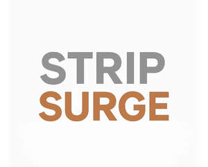
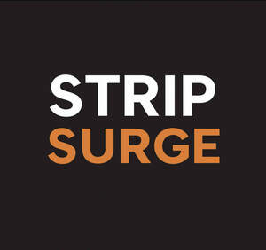

Trade Mark Journal No.2025/042 17 October 2025
UK00004275526 9 October 2025 (3,5,10,35)
Mark 1

Mark 2

- Class 3
- Scented oils; Ethereal oils for fragrancing; Non-medicated bath oils; Bath oils (Non-medicated -); Non-medicated shower oils; Skin care oils [non-medicated]; Perfume oils; Aromatic oils for the bath; Perfumed oils for skin care; Natural oils for perfumes; Hand oils (Non-medicated -); Skin balms (Non-medicated -); Lavender oil for cosmetic use; Massage oils, not medicated; Mineral oils [cosmetic]; Cosmetics in the form of oils; Non-medicated stimulating lotions for the skin; Piperonal fragrancing compounds; Scented oils used to produce aromas when heated; Bath and shower oils [non-medicated]; Ethereal essences and oils; Non-medicated skin lotions; Massage oils and lotions; Cosmetic oils for the epidermis; Non-medicated skin clarifying lotions; Peppermint oil [perfumery]; Rosemary oil for cosmetic use; After-sun oils [cosmetics]; Ethereal oils for cosmetic purposes; Balms (Non-medicated -); Scented water for fragrancing; Moist wipes impregnated with a cosmetic lotion; Essential oils; Lavender gel; Oils for the skin; Scented fabric refresher sprays; Scented bathing salts; Scented body lotions and creams; Skin cleansing cream [non-medicated]; Breath freshening strips; Strips (Breath freshening -); Teeth whitening strips; Face and body masks; Spray cleaners for freshening athletic mouth guards; Perfume; Perfumes; Perfumery and fragrances; Fragrances; Oils for perfumes and scents; Fragrance sachets; Musk [perfumery]; Cologne; Perfume water; Aromatics for perfumes; Room perfume sprays; Liquid perfumes; Potpourris [fragrances]; Colognes; Scents; Fragrance emitting wicks for room fragrance; Aromatics for fragrances; Perfumery; Perfumes for cardboard; Fragrance refills for non-electric room fragrance dispensers; Cedarwood perfumery; Extracts of perfumes; Extracts of flowers being perfumes; Body deodorants [perfumery]; Deodorants for personal use [perfumery]; Aftershave lotions; Perfumeries; Body fragrances; Perfume oils for the manufacture of cosmetic preparations; Fragrance preparations; Household fragrances; Vanilla perfumery; Perfumed sachets; Room perfumes in spray form; Fragrance sachets for eye pillows; Room fragrances; Perfumery products; Aftershave; Feminine deodorant sprays; Mint for perfumery; Perfumed soaps; Cologne water; Solid perfumes; After-shave lotions; Air fragrance preparations; Perfuming sachets; Perfumed soap; Aftershave balms; Scented linen sprays; Synthetic perfumery; Aftershave balm; Air fragrance reed diffusers; Scented sachets; Geraniol for fragrancing; Perfumed powders [for cosmetic use]; Scented body lotions; Perfumed powder [for cosmetic use]; Scented soaps; Incense spray; Perfumed powders; Perfumed creams; Scented body spray; Aromatherapy lotions; Skin fresheners [cosmetics]; Deodorant soap; Geraniol fragrancing compounds; Incense sachets; Cosmetics; Bath salts; Cosmetic bath salts; Non-medicated bath salts; Bath salts, not for medical purposes; Bath oils; Shower salts not for medical purposes; Bath and shower gels; Bath gels; Bath crystals; Bath herbs; Bath lotion; Shower oils.
- Class 5
- Nasal sprays for medical purposes; Solutions for medical use in washing the nasal passages; Nasal spray for the treatment of allergies; Nasal drops for the treatment of allergies; Decongestant nasal sprays; Saline solution for sinus and nasal irrigation; Adhesive skin patches for medical use; Adhesive strips for medical purposes; Inhaled pharmaceutical preparations for the treatment of respiratory diseases and disorders; Nasal decongestants; Pharmaceutical preparations for inhalation for the treatment of pulmonary hypertension; Medicated nasal spray preparations; Adhesive patches for medical purposes; Nose drops for medical purposes; Multi-purpose medicated analgesic balms; Oils (Medicinal -); Medicinal oils; Skin care oils [medicated]; Lotions (Tissues impregnated with pharmaceutical -); Antiseptic sprays in aerosol form for use on the skin; Antiseptic ointments; Moist wipes impregnated with a pharmaceutical lotion; Impregnated pads containing medicated preparations; Nose drops; Dissolvable strips to stop bleeding from minor cuts and grazes; Pharmaceutical preparations in strip form; Smelling salts; Epsom salts; Mineral salts for baths; Salts for mineral water baths; Baths (Salts for mineral water -); Mineral water salts; Salts (Mineral water -); Aromatic deodorizers for toilets; Magnesium salts for pharmaceutical use; Oral rehydration salts; Combinations of calcium salts for pharmaceutical use; Bath salts for medical purposes; Menthol vapor bath preparations for babies.
- Class 10
- Medical devices; Medical apparatus and devices; Nasal filters for medical purposes; Humidifiers for use with respiratory therapy apparatus; Respiratory therapy instruments; Internal nasal dilators; Nasal dilators; Protective breathing masks for medical applications; Therapeutic nose clips for the prevention of snoring; Protective nose masks for medical use; Magnetic treatment apparatus for medical use; Nasal aspirators; Face masks for medical use for anti bacterial protection; Body warming devices for medical use; Inserts for the nose; Protective nose masks for dental use; Protective nose masks for veterinary use.
- Class 35
- Retail services relating to fragrancing preparations; Marketing research in the fields of cosmetics, perfumery and beauty products; Retail services in relation to sporting articles; Wholesale services in relation to sporting articles; Agency services for promoting sports personalities; Retail services in relation to sporting equipment; Promotional management for sports personalities.
Strip Surge Ltd
Sally Jones